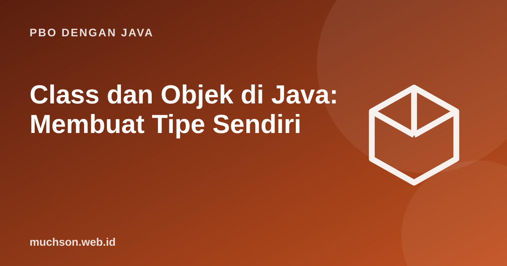

Beranda › Artikel › PBO dengan Java
PBO dengan JavaClass dan Objek di Java: Membuat Tipe Sendiri
Pemrograman berorientasi objek memodelkan program sebagai kumpulan objek yang punya data dan perilaku. Class adalah cetak birunya, objek adalah benda nyata yang dibuat dari cetak biru itu. Materi ini membangun fondasi yang dipakai di semua materi PBO berikutnya.
Sebaiknya sudah paham: method Java, array

Tujuan belajar
Setelah membaca dan mencoba materi ini, Anda mampu:
- membedakan class dan objek
- mendeklarasikan atribut dan method
- membuat objek dengan new dan memakai titik untuk mengakses anggota
- menjelaskan referensi, null, dan NullPointerException
- menggambarkan keadaan memori (stack dan heap) untuk beberapa objek
Cetak biru dan benda nyata
Mendefinisikan class
class Mahasiswa {
String nim; // atribut (field)
String nama;
double ipk;
void perkenalkan() { // method
System.out.println("Saya " + nama + " (" + nim + "), IPK " + ipk);
}
boolean berprestasi() {
return ipk >= 3.5;
}
}
public class Main {
public static void main(String[] args) {
Mahasiswa a = new Mahasiswa(); // membuat objek
a.nim = "A01"; a.nama = "Ani"; a.ipk = 3.8;
Mahasiswa b = new Mahasiswa();
b.nim = "A02"; b.nama = "Budi"; b.ipk = 3.1;
a.perkenalkan();
b.perkenalkan();
System.out.println(a.berprestasi() + " " + b.berprestasi());
}
}Saya Ani (A01), IPK 3.8
Saya Budi (A02), IPK 3.1
true false
Nilai awal atribut
| Tipe atribut | Nilai awal otomatis |
|---|---|
| int, long, short, byte | 0 |
| double, float | 0.0 |
| boolean | false |
| char | '\u0000' (karakter kosong) |
| Tipe referensi (String, objek, larik) | null |
Variabel lokal di dalam method tidak diberi nilai awal otomatis; kompiler menolak pemakaian sebelum diisi.
Referensi dan null
class Kotak { int isi; }
public class Main {
public static void main(String[] args) {
Kotak p = new Kotak();
Kotak q = p; // q dan p menunjuk objek yang sama
q.isi = 42;
System.out.println(p.isi);
Kotak r = new Kotak(); // objek lain
r.isi = 42;
System.out.println((p == r) + " " + (p == q)); // == membandingkan alamat
Kotak kosong = null;
try {
System.out.println(kosong.isi);
} catch (NullPointerException e) {
System.out.println("NullPointerException: tidak ada objek di balik referensi null");
}
}
}42
false true
NullPointerException: tidak ada objek di balik referensi null
Pengelolaan memori
Java mengelola memori heap otomatis dengan garbage collector: objek yang tidak lagi ditunjuk variabel mana pun akan dibersihkan. Anda tidak perlu (dan tidak bisa) membebaskan objek secara manual.
Latihan mandiriCoba kerjakan dulu sebelum membuka jawaban.
1. Buat class Buku dengan atribut judul dan harga, serta method yang mengembalikan harga setelah diskon persen tertentu.
Method dengan parameter persen:
return harga * (1 - persen / 100.0);2. Berapa objek Mahasiswa yang dibuat oleh: Mahasiswa m1 = new Mahasiswa(); Mahasiswa m2 = m1; Mahasiswa m3 = new Mahasiswa();
Dua objek: m1 dan m2 menunjuk objek yang sama.
3. Mengapa p == r bernilai false padahal isinya sama?
== membandingkan alamat objek, bukan isinya. Perbandingan isi memerlukan method equals yang diimplementasikan.
4. Apa bedanya atribut dan variabel lokal?
Atribut milik objek dan hidup sepanjang objek; variabel lokal hidup hanya selama method berjalan dan tidak punya nilai awal otomatis.
Ringkasan
- Class adalah cetak biru; objek adalah instansinya (dibuat dengan new).
- Atribut menyimpan keadaan, method menyatakan perilaku.
- Variabel menyimpan referensi; objek berada di heap; null berarti tidak ada objek.
- Garbage collector membersihkan objek yang tak lagi dirujuk.
Tanya jawab
Apa beda class dan struct?
Java tidak punya struct; class mencakup keperluan itu. Record (Java 16+) adalah bentuk ringkas untuk class pembawa data.
Berapa banyak class boleh dalam satu berkas?
Banyak, tetapi paling banyak satu yang public dan namanya harus sama dengan nama berkas.
Apakah objek selalu di heap?
Secara konseptual ya; JVM bisa mengoptimalkan (escape analysis) sehingga sebagian objek tidak benar-benar dialokasikan di heap.
Referensi
- Oracle: The Java Tutorials, Classes and Objects
- dev.java: Learn Java (Oracle)
- The Java Language Specification
- Joshua Bloch, Effective Java (edisi ke-3, Addison-Wesley, 2018)